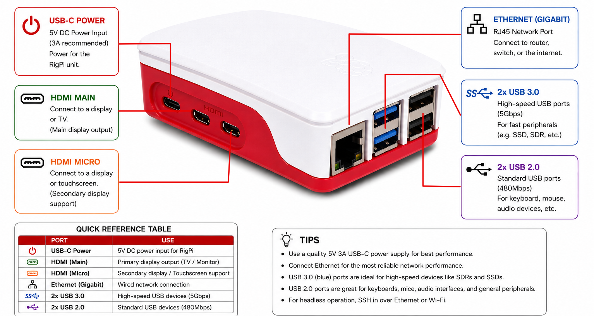
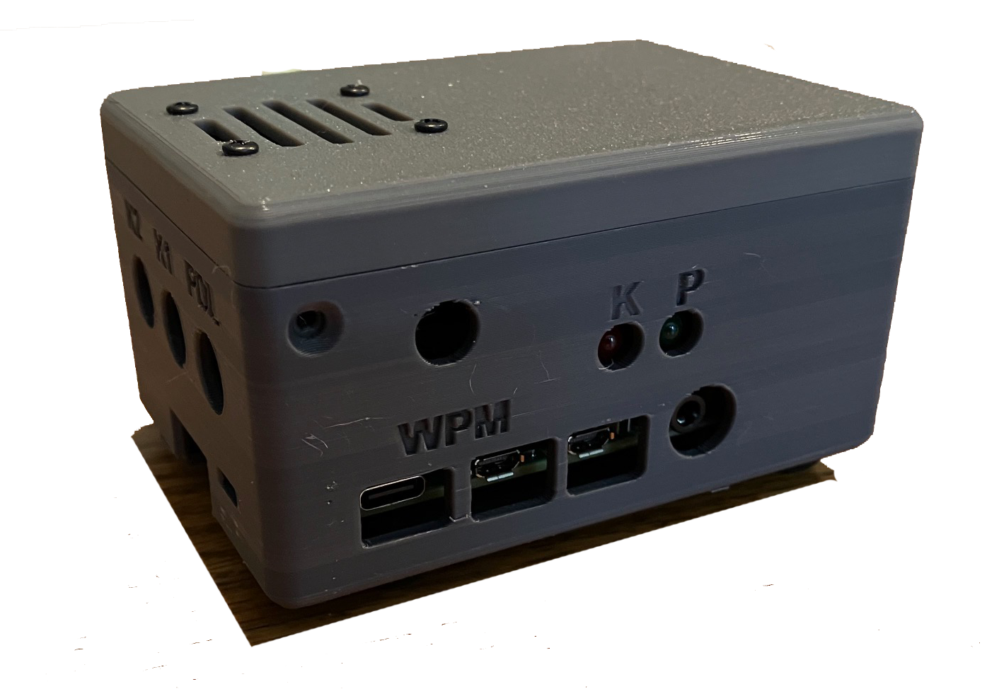

|
<< Click to Display Table of Contents >> Navigation: »No topics above this level« |
The Raspberry Pi provides a number of connections. Here is a list:
▪USB 2.0 (4), or 2-USB 2.0/2-USB 3.0 for the Raspberry Pi 4/5.
▪Gigabit Ethernet
▪802.11ac/n wireless LAN (2.4 and 5 GHz Wi-Fi)
▪Bluetooth 4.2 Bluetooth Low Energy (BLE)
▪HDMI (micro HDMI for Raspberry Pi 4B) video/audio
▪3.5 mm audio out
▪Micro USB (USB-C for Raspberry Pi 4B) power (5.1 Volts at 3.5 amp)
The RigPi Audio and RigPi Keyer have their own connections described in the following topics. The illustration below shows the RigPi 5. The RigPi 2 Keyer by Steve, K1EL, can be used with a Raspberry Pi 4 or 5, although the K1EL case is designed for a Raspberry Pi 4. Check Steve's site for any updates for RigPi 5.


K1EL RigPi Case with Keyer board. Raspberry Pi 4 only.